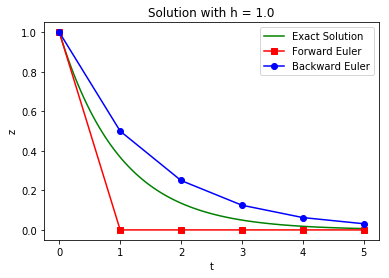
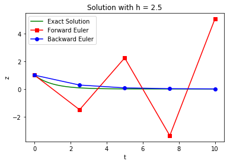
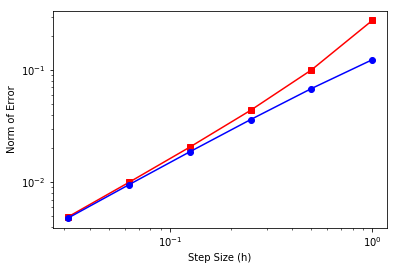
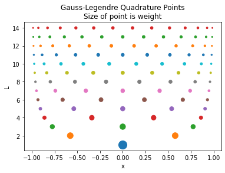
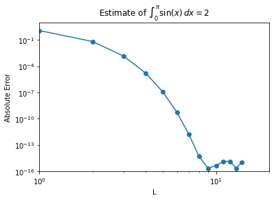
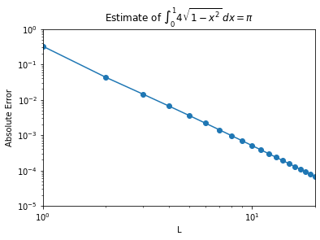

Numeric Integration for DAEs
Contents
2.6. Numeric Integration for DAEs#
The purpose of this notebook/class session is to provide the requisite background on numeric integration of DAEs. This helps appreciate the “direct transcription” approach for dynamic optimization used in Pyomo.dae.
import numpy as np
import scipy.optimize as opt
import matplotlib.pyplot as plt
2.6.1. Single-Step Runge-Kutta Methods#
ADD REFERENCE HERE
Chapter 9 in Biegler (2010)
Chapter 17 in McClarren (2018)
2.6.1.1. General Form: Index 0 DAE#
Consider the ODE system: $\(\begin{equation*} \dot{z} = f(t,z), \quad z(t_0) = z_0 \end{equation*}\)$
where \(z(t)\) are the differentail variables and \(f(t,z)\) is a (nonlinear) continous function.
The general Runge-Kutta formula is: $\(\begin{align*} z_{i+1} &= z_{i} + h_i \sum_{k=1}^{n_s} b_k f(t_i + c_k h_i, \hat{z}_k) \\ \hat{z}_k &= z_i + h_i \sum_{j=1}^{n_{rk}} a_{k,j} f(t_i + c_j h_i, \hat{z}_j), \quad k=1,...,n_s \end{align*}\)$
where
\(z_i\) are the differential variables at the start of step \(i\) (time \(t_i\))
\(z_{i+1}\) are the differential variables at the end of step \(i\) (time \(t_{i+1}\))
\(\hat{z}_k\) are differential variables for intermediate stage \(k\)
\(h_i\) is the size for step \(i\) such that \(t_{i+1} = t_i + h_i\)
\(n_s\) is the number of stages
\(n_{rk}\) is the number of \(f(\cdot)\) evaluations to calculate intermediate \(k\)
\(a_{k,j}\) are coefficients, together known as the Runge-Kutta matrix
\(b_k\) are cofficients, known as the weights
\(c_k\) are coefficients, know as the nodes
\(h_i\) is selected based on error tolerances
The choice for \(A\), \(b\) and \(c\) selects the specific method in the Runge-Kutta family. These coefficients are often specific in a Butcher block (or Butcher tableau).
A Runge-Kutta method is called consistent if: $\(\begin{equation*} \sum_{k=1}^{n_s} b_k = 1 \quad \mathrm{and} \quad \sum_{j=1}^{n_s} a_{k,j} = c_k \end{equation*}\)$
2.6.1.2. Explicit (Forward) Euler#
Consider one of the simplest Runge-Kutta methods:
What are \(A\), \(b\) and \(c\) in the general formula?
\(n_s = 1\). This is only a single stage. Thus we only need to determine \(c_1\), \(b_1\), and \(n_{r1}\)
Moreover, \(\hat{z}_1 = z_i\) because \(f(\cdot)\) is only evaluated at \(t_i\) and \(z_i\). This implies:
\(n_{r1} = 0\)
\(c_1 = 0\)
\(b_1 = 1\)
\(A\) is empty because \(n_{r1} = 0\)
The implementation is very straightword (see below). We can calculate \(z_{i+1}\) with a single line!
def create_steps(tstart,tend,dt):
n = int(np.ceil((tend-tstart)/dt))
return dt*np.ones(n)
def explicit_euler(f,h,z0):
'''
Arguments:
f: function that returns rhs of ODE
h: list of step sizes
z0: initial conditions
Returns:
t: list of time steps. t[0] is 0.0 by default
z: list of differential variable values
'''
# Number of timesteps
nT = len(h) + 1
t = np.zeros(nT)
# Number of states
nZ = len(z0)
Z = np.zeros((nT,nZ))
# Copy initial states
Z[0,:] = z0
for i in range(1,nT):
i_ = i-1
# Advance time
t[i] = t[i_] + h[i_]
# Implicit Euler formula
Z[i,:] = Z[i_,:] + h[i_]*f(t[i_],Z[i_,:])
return t, Z
2.6.1.3. Implicit (Backward) Euler#
Consider another simple Runge-Kutta method:
What are \(A\), \(b\) and \(c\) to express using the general formula?
\(n_s = 1\). Thus is only a single stage. Moreover, \(\hat{z}_1 = z_{i+1}\) because \(f(\cdot)\) is evaluated at \(t_{i+1}\) and \(z_{i+1}\). This implies:
\(b_1 = 1\)
\(c_1 = 1\)
Moreover, \(z_{i+1} = z_{i} + h_i~f(t_{i+1}, z_{i+1})\) implies \(\hat{z}_1 = z_i + h_i f(t_{i+1}, \hat{z}_1)\). Thus:
\(a_{1,1} = 1\)
Notice that the formula for \(z_{i+1}\) is implicit. We need to solve a (nonlinear) system of equations to calculate the step.
def implicit_euler(f,h,z0):
'''
Arguments:
f: function that returns rhs of ODE
h: list of step sizes
z0: initial conditions
Returns:
t: list of time steps. t[0] is 0.0 by default
z: list of differential variable values
'''
# Number of timesteps
nT = len(h) + 1
t = np.zeros(nT)
# Number of states
nZ = len(z0)
Z = np.zeros((nT,nZ))
# Copy initial states
Z[0,:] = z0
for i in range(1,nT):
i_ = i-1
# Advance time
t[i] = t[i_] + h[i_]
## Implicit Runge-Kutta formula.
## Need to solve nonlinear system of equations.
# Use Explicit Euler to calculate initial guess
Z[i,:] = Z[i_,:] + h[i_]*f(t[i_],Z[i_,:])
# Solve nonlinear equation
implicit = lambda z : Z[i_,:] + h[i_]*f(t[i_],z) - z
Z[i,:] = opt.fsolve(implicit, Z[i,:])
return t, Z
2.6.1.4. Comparison#
Let’s test this on a simple problem: $\(\dot{z}(t) = -\lambda z(t), \qquad z_0 = 1.\)\( The solution to this problem is \)\(z(t) = e^{-\lambda t}.\)$
For simplicity, let’s numerically analyze \(\lambda = 1\).
rhs = lambda t, z: -z
sln = lambda t: np.exp(-t)
dt = 1.0
h = create_steps(0.0,5.0,dt)
z0 = [1]
te, Ze = explicit_euler(rhs, h, z0)
ti, Zi = implicit_euler(rhs, h, z0)
plt.figure()
# Use 101 points for exact to make it smooth
texact = np.linspace(0.0,np.sum(h),101)
# Plot solutions
plt.plot(texact, sln(texact),color='green',label="Exact Solution")
plt.plot(te,Ze,color='red',marker='s',label='Forward Euler')
plt.plot(ti,Zi,color='blue',marker='o',label='Backward Euler')
plt.xlabel('t')
plt.ylabel('z')
plt.legend()
plt.title('Solution with h = '+ str(dt))
plt.show()

2.6.1.5. Stability#
Keeping \(\lambda = 1\), are there any limits on step size?
dt = 2.5
h = create_steps(0.0,10.0,dt)
z0 = [1]
te, Ze = explicit_euler(rhs, h, z0)
ti, Zi = implicit_euler(rhs, h, z0)
plt.figure()
# Use 101 points for exact to make it smooth
texact = np.linspace(0.0,np.sum(h),101)
# Plot solutions
plt.plot(texact, sln(texact),color='green',label="Exact Solution")
plt.plot(te,Ze,color='red',marker='s',label='Forward Euler')
plt.plot(ti,Zi,color='blue',marker='o',label='Backward Euler')
plt.xlabel('t')
plt.ylabel('z')
plt.legend()
plt.title('Solution with h = '+ str(dt))
plt.show()

Key observation: forward (explicit) Euler becomes unstable with large steps whereas backward (implicit) Euler is stable.
There is a good mathematical reason for this! See http://www.it.uu.se/edu/course/homepage/bridging/ht13/Stability_Analysis.pdf for details.
Key results (for this specific test problem):
Explicit Euler requires step sizes with \(h < 2/\lambda\).
Implicit Euler is unconditionally stable provided \(\lambda > 0\).
Similar analysis and concepts extend to Runge-Kutta methods.
2.6.1.6. Error Analysis#
How does our choice in step size \(h\) impact the error of these numerical techniques?
Excellent tutorial: http://www.math.unl.edu/~gledder1/Math447/EulerError
Delta_t = np.array([1.0,.5,.25,.125,.0625,.0625/2])
t_final = 2
error_forward = np.zeros(Delta_t.size)
error_backward = np.zeros(Delta_t.size)
for i in range(0,len(Delta_t)):
# create steps
h = create_steps(0.0,t_final,Delta_t[i])
# solve
t,ze = explicit_euler(rhs, h, z0)
t,zi = implicit_euler(rhs, h, z0)
zsln = np.exp(-t)
n = len(t) - 1
# Calculate error
error_forward[i] = np.linalg.norm(ze[:,0] - zsln)/np.sqrt(n)
error_backward[i] = np.linalg.norm(zi[:,0] - zsln)/np.sqrt(n)
plt.loglog(Delta_t,error_forward,'s-',color="red",label="Forward Euler")
plt.loglog(Delta_t,error_backward,'o-',color="blue",label="Backward Euler")
#slope = (np.log(error[-1]) - np.log(error[-2]))/(np.log(Delta_t[-1])- np.log(Delta_t[-2]))
#plt.title("Slope of Error is " + str(slope))
plt.xlabel("Step Size (h)")
plt.ylabel("Norm of Error")
plt.show()
# Calculate slope
calc_slope = lambda error: (np.log(error[-1]) - np.log(error[-2]))/(np.log(Delta_t[-1])- np.log(Delta_t[-2]))
print("Slope for Forward Euler: " + str(calc_slope(error_forward)))
print("Slope for Backward Euler: " + str(calc_slope(error_backward)))

Slope for Forward Euler: 1.0220608473216777
Slope for Backward Euler: 0.9874086317220228
Notice that the error indicates that this is a first-order method in \(\Delta t\): when I decrease \(\Delta t\) by a factor of 2, the error decreases by a factor of 2. In this case we measured the error with a slightly different error norm: $\(\mathrm{Error} = \frac{1}{\sqrt{N}}\sqrt{\sum_{n=1}^{N} \left(y^n_\mathrm{approx} - y^n_\mathrm{exact}\right)^2},\)\( where \)N$ is the number of steps the ODE is solved over.
Key Results:
Implicit and Explicit Euler have \(O(h^2)\) local error and \(O(h)\) global error.
2.6.1.7. Extensions to DAEs#
Consider semi-explicit DAEs: $\(\begin{equation*} \dot{z} = f(t,z,y), \quad g(z,y) = 0, \quad z(t_0) = z_0 \end{equation*}\)$
Runge-Kutta methods are easy to extend.
Key Results. If DAE is index 1, then similar stability and order properties as for ODE problems.
Discussion: Why are implicit RK methods always used for DAE systems?
2.6.2. Quadrature Rules#
Chapter 16 in McClarren (2018).
Chapter 10 in Biegler (2010)
2.6.2.1. Main Idea#
Approximate integral \(I\) with weighted sum of function evaluations:
where:
\(x_l\) are nodes (abscissas)
\(w_l\) are weights
\(n\) number of nodes and weights
Central questions:
How to choose nodes and weights?
How does this choice impact approximation error?
How does \(n\) impact approximation error?
2.6.2.2. Degree and order of a polynomial#
Consider the polynomial:
\(p(t)\) is said to be of order K+1 as it has K+1 coefficients \(a_0, ... a_K\).
The degree of the polynomial is the highest power with a non-zero coefficient. Thus if \(a_K \neq 0\), then \(p(t)\) is degree K.
Example: What is the degree of \(2 x^3 - x^2 + 1\)? What can you say about its order?
2.6.2.3. Gauss-Legrenge Quadrature#
For a specific choice of nodes and weights, the quadrature rule \(\sum_{l=1}^{L} w_l f(x_l)\) is exact for integral \(I\) is \(f(x)\) is a polynomial of degree \(2L-1\) or less. This specific case is the optimal (most accurate) rule known as the Gauss-Legrenge quadrature.
The weights and abscissas are given for \(L\) up to 8:
| $L$ | $x_l$ | $w_l$ |
| 1 | 0 | 2.0000000000000000000000000 |
| 2 | ±0.5773502691896257645091488 | 1.0000000000000000000000000 |
| 3 | 0 | 0.8888888888888888888888889 |
| ±0.7745966692414833770358531 | 0.5555555555555555555555556 | |
| 4 | ±0.3399810435848562648026658 | 0.6521451548625461426269361 |
| ±0.8611363115940525752239465 | 0.3478548451374538573730639 | |
| 5 | 0 | 0.5688888888888888888888889 |
| ±0.5384693101056830910363144 | 0.4786286704993664680412915 | |
| ±0.9061798459386639927976269 | 0.2369268850561890875142640 | |
| 6 | ±0.2386191860831969086305017 | 0.4679139345726910473898703 |
| ±0.6612093864662645136613996 | 0.3607615730481386075698335 | |
| ±0.9324695142031520278123016 | 0.1713244923791703450402961 | |
| 7 | 0 | 0.4179591836734693877551020 |
| ±0.4058451513773971669066064 | 0.3818300505051189449503698 | |
| ±0.7415311855993944398638648 | 0.2797053914892766679014678 | |
| ±0.9491079123427585245261897 | 0.1294849661688696932706114 | |
| 8 | ±0.1834346424956498049394761 | 0.3626837833783619829651504 |
| ±0.5255324099163289858177390 | 0.3137066458778872873379622 | |
| ±0.7966664774136267395915539 | 0.2223810344533744705443560 | |
| ±0.9602898564975362316835609 | 0.1012285362903762591525314 |
2.6.2.4. Code#
import numpy as np
import matplotlib.pyplot as plt
def GLQuad(f, L=8,dataReturn = False):
"""Compute the Gauss-Legendre Quadrature estimate
of the integral of f(x) from -1 to 1
Inputs:
f: name of function to integrate
L: Order of integration rule (8 or less)
Returns:
G-L Quadrature estimate"""
assert(L>=1)
if (L==1):
weights = np.ones(1)*2
xs = np.array([0])
elif (L==2):
weights = np.ones(2)
xs = np.array([-np.sqrt(1.0/3.0),np.sqrt(1.0/3.0)])
elif (L==3):
weights = np.array([0.8888888888888888888888889,
0.5555555555555555555555556,
0.5555555555555555555555556])
xs = np.array([0.0,-0.7745966692414833770358531,
0.7745966692414833770358531])
elif (L==4):
weights = np.array([0.6521451548625461426269361,0.6521451548625461426269361,
0.3478548451374538573730639,0.3478548451374538573730639])
xs = np.array([-0.3399810435848562648026658, 0.3399810435848562648026658,
-0.8611363115940525752239465, 0.8611363115940525752239465])
elif (L==5):
weights = np.array([0.5688888888888888888888889,
0.4786286704993664680412915,0.4786286704993664680412915,
0.2369268850561890875142640,0.2369268850561890875142640])
xs = np.array([0.0,-0.5384693101056830910363144,0.5384693101056830910363144,
-0.9061798459386639927976269,0.9061798459386639927976269])
elif (L==6):
weights = np.array([0.4679139345726910473898703,0.4679139345726910473898703,
0.3607615730481386075698335,0.3607615730481386075698335,
0.1713244923791703450402961,0.1713244923791703450402961])
xs = np.array([-0.2386191860831969086305017, 0.2386191860831969086305017,
-0.6612093864662645136613996, 0.6612093864662645136613996,
-0.9324695142031520278123016, 0.9324695142031520278123016])
elif (L==7):
weights = np.array([0.4179591836734693877551020,
0.3818300505051189449503698,0.3818300505051189449503698,
0.2797053914892766679014678,0.2797053914892766679014678,
0.1294849661688696932706114,0.1294849661688696932706114])
xs = np.array([0.0,-0.4058451513773971669066064,0.4058451513773971669066064,
-0.7415311855993944398638648,0.7415311855993944398638648,
-0.9491079123427585245261897,0.9491079123427585245261897])
elif (L==8):
weights = np.array([0.3626837833783619829651504,0.3626837833783619829651504,
0.3137066458778872873379622,0.3137066458778872873379622,
0.2223810344533744705443560,0.2223810344533744705443560,
0.1012285362903762591525314,0.1012285362903762591525314])
xs = np.array([-0.1834346424956498049394761, 0.1834346424956498049394761,
-0.5255324099163289858177390, 0.5255324099163289858177390,
-0.7966664774136267395915539, 0.7966664774136267395915539,
-0.9602898564975362316835609, 0.9602898564975362316835609])
else: #use numpy's function
xs, weights = np.polynomial.legendre.leggauss(L)
quad_estimate = np.sum(weights*f(xs))
if (dataReturn):
return quad_estimate, weights, xs
else:
return quad_estimate
2.6.2.5. Visualize Weights#
L = np.arange(1,15)
f = lambda x: x
for l in L:
quad_est, weights, xs = GLQuad(f,l,dataReturn=True)
levels = weights*0 + l
plt.scatter(xs, levels, s=weights*100)
plt.xlabel("x")
plt.ylabel("L")
plt.title("Gauss-Legendre Quadrature Points\nSize of point is weight")
plt.show()

2.6.2.6. Why \(2L-1\)?#
Let \(f(x) = a_{2L-1} x^{2L-1} + a_{2L-2} x^{2L-2} + ... + a_{1} x^1 + a_{0}\)
This polynomial has \(2L\) coefficients. Likewise, \(\int f(x)dx\) has \(2L\) coefficients plus the constant of integration. This is the same number of degrees of freedom we have in choosing the weights and nodes.
2.6.2.7. How to determine the nodes and weights?#
One way to derive the Gauss-Legendre quadrature rules is by looking at the integral generic monomials of degree 0 up to \(2L-1\) and setting each equal to the \(L\) point Gauss-Legendre quadrature rule: $\( \int\limits_{-1}^{1} dx\, a_0 x^0 = a_0\sum_{l=1}^L w_l x_l^0,\)\( \)\( \int\limits_{-1}^{1} dx\, a_1 x^1 = a_1\sum_{l=1}^L w_l x_l^1,\)\( and continuing until \)\( \int\limits_{-1}^{1} dx\, a_{2L-1} x^{2L-1} = a_{2L-1}\sum_{l=1}^L w_l x_l^{2L-1}.\)\( Notice that the \)a_i\( **constants cancel out** of each equation so they do not matter. This system is \)2L\( equations with \)L\( weights, \)w_l\(, and \)L\( abscissas (nodes), \)x_l$. We could solve these equations to get the weights and abscissas, though this is not how it is done in practice generally—this is accomplished by using the theory of orthogonal polynomials.
2.6.2.8. Polynomial Example#
As a simple demonstration of the Gauss-Legendre quadrature, let’s show that it integrates polynomials of degree \(2L-1\) exactly. Consider the integral $\(\int\limits_{-1}^1 (x+1)^{2L-1}\,dx = \frac{2^{2 L-1}}{L}.\)$
L = np.arange(1,12)
for l in L:
# Create f
f = lambda x: (x+1)**(2*l-1)
# Evaluate exact (analytic) solution
integral = 2**(2*l - 1)/l
# Evaluate quadrature rule
GLintegral = GLQuad(f,l)
# Print results
print("L =", l,"\t Estimate is",GLintegral,
"Exact value is",integral,
"\nAbs. Relative Error is", np.abs(GLintegral-integral)/integral)
L = 1 Estimate is 2.0 Exact value is 2.0
Abs. Relative Error is 0.0
L = 2 Estimate is 3.9999999999999996 Exact value is 4.0
Abs. Relative Error is 1.1102230246251565e-16
L = 3 Estimate is 10.666666666666668 Exact value is 10.666666666666666
Abs. Relative Error is 1.6653345369377348e-16
L = 4 Estimate is 31.99999999999999 Exact value is 32.0
Abs. Relative Error is 3.3306690738754696e-16
L = 5 Estimate is 102.39999999999995 Exact value is 102.4
Abs. Relative Error is 5.551115123125783e-16
L = 6 Estimate is 341.33333333333337 Exact value is 341.3333333333333
Abs. Relative Error is 1.6653345369377348e-16
L = 7 Estimate is 1170.2857142857135 Exact value is 1170.2857142857142
Abs. Relative Error is 5.828670879282072e-16
L = 8 Estimate is 4096.000000000003 Exact value is 4096.0
Abs. Relative Error is 6.661338147750939e-16
L = 9 Estimate is 14563.555555555577 Exact value is 14563.555555555555
Abs. Relative Error is 1.4988010832439613e-15
L = 10 Estimate is 52428.799999999974 Exact value is 52428.8
Abs. Relative Error is 5.551115123125783e-16
L = 11 Estimate is 190650.181818181 Exact value is 190650.18181818182
Abs. Relative Error is 4.274358644806853e-15
2.6.2.9. Generalization#
We are generally interested in integrals not just over the domain \(x\in [-1,1]\). We’ll now make a function that does Gauss-Legendre quadrature over a general range using the formula $\(\int_a^b f(x)\,dx = \frac{b-a}{2} \int_{-1}^1 f\left(\frac{b-a}{2}z + \frac{a+b}{2}\right)\,dz.\)$
def generalGL(f,a,b,L):
"""Compute the Gauss-Legendre Quadrature estimate
of the integral of f(x) from a to b
Inputs:
f: name of function to integrate
a: lower bound of integral
b: upper bound of integral
L: Order of integration rule (8 or less)
Returns:
G-L Quadrature estimate"""
assert(L>=1)
#define a re-scaled f
f_rescaled = lambda z: f(0.5*(b-a)*z + 0.5*(a+b))
integral = GLQuad(f_rescaled,L)
return integral*(b-a)*0.5
Let’s show that this version integrates polynomials of degree \(2L-1\) exactly. Consider the integral $\(\int\limits_{-3}^2 (x+1)^{2L-1}\,dx = \frac{9^L-4^L}{2 L}.\)$
L = np.arange(1,12)
for l in L:
f = lambda x: (x+1)**(2*l-1)
integral = (9**l-4**l)/(2*l)
GLintegral = generalGL(f,-3,2,l)
print("L =", l,"\t Estimate is",GLintegral,
"Exact value is",integral,
"\nAbs. Relative Error is", np.abs(GLintegral-integral)/integral)
L = 1 Estimate is 2.5 Exact value is 2.5
Abs. Relative Error is 0.0
L = 2 Estimate is 16.249999999999996 Exact value is 16.25
Abs. Relative Error is 2.1862853408003084e-16
L = 3 Estimate is 110.83333333333336 Exact value is 110.83333333333333
Abs. Relative Error is 2.5643647606379557e-16
L = 4 Estimate is 788.1249999999999 Exact value is 788.125
Abs. Relative Error is 1.4424975444455643e-16
L = 5 Estimate is 5802.500000000002 Exact value is 5802.5
Abs. Relative Error is 3.1348374037843283e-16
L = 6 Estimate is 43945.4166666667 Exact value is 43945.416666666664
Abs. Relative Error is 8.278403262589113e-16
L = 7 Estimate is 340470.35714285733 Exact value is 340470.35714285716
Abs. Relative Error is 5.128874777992276e-16
L = 8 Estimate is 2686324.0625 Exact value is 2686324.0625
Abs. Relative Error is 0.0
L = 9 Estimate is 21508796.944444507 Exact value is 21508796.944444444
Abs. Relative Error is 2.9443736549946913e-15
L = 10 Estimate is 174286791.24999988 Exact value is 174286791.25
Abs. Relative Error is 6.839835003892255e-16
L = 11 Estimate is 1426221150.2272635 Exact value is 1426221150.2272727
Abs. Relative Error is 6.5195531446713024e-15
2.6.2.10. Another Example#
Let’s see how Gauss-Quadrature performs on a function that is not polynomial: $\(\int_{0}^\pi \sin(x)\,dx = 2,\)$
L = np.arange(1,15)
errors = np.zeros(L.size)
f = lambda x: np.sin(x)
integral = 2
for l in L:
GLintegral = generalGL(f,0,np.pi,l)
errors[l-1] = np.fabs(GLintegral-integral)
print("L =",l,"Estimate is",GLintegral,"Exact value is",integral)
plt.loglog(L,errors,'o-')
plt.xlabel("L")
plt.ylabel("Absolute Error")
plt.title("Estimate of $\int_{0}^\pi \sin(x)\,dx = 2$")
plt.axis([1,20,10**-16,10**1])
plt.show()
L = 1 Estimate is 3.141592653589793 Exact value is 2
L = 2 Estimate is 1.9358195746511373 Exact value is 2
L = 3 Estimate is 2.0013889136077436 Exact value is 2
L = 4 Estimate is 1.999984228457722 Exact value is 2
L = 5 Estimate is 2.000000110284472 Exact value is 2
L = 6 Estimate is 1.9999999994772704 Exact value is 2
L = 7 Estimate is 2.0000000000017906 Exact value is 2
L = 8 Estimate is 1.9999999999999951 Exact value is 2
L = 9 Estimate is 1.9999999999999998 Exact value is 2
L = 10 Estimate is 2.0000000000000004 Exact value is 2
L = 11 Estimate is 2.0000000000000013 Exact value is 2
L = 12 Estimate is 1.9999999999999987 Exact value is 2
L = 13 Estimate is 1.9999999999999998 Exact value is 2
L = 14 Estimate is 1.999999999999999 Exact value is 2

Notice that we get to machine-precision by evaluating the integral at only 8 points!
This exponential convergence will only be obtained on smooth solutions without singularities in the function or its derivatives.
2.6.2.11. A More Complicated Example#
Consider: $\( \int\limits_0^1 4 \sqrt{1-x^2}\,dx = \pi.\)\( This integral has a singularity in its derivative at \)x=1$. Gauss-Legendre quadrature will not have exponential convergence on this function.
L = np.arange(1,40)
errors = np.zeros(L.size)
f = lambda x: 4.0*np.sqrt(1-x**2)
integral = np.pi
for l in L:
GLintegral = generalGL(f,0,1,l)
errors[l-1] = np.fabs(GLintegral-integral)
print("L =",l,"Estimate is",GLintegral,"Exact value is",integral)
plt.loglog(L,errors,'o-')
plt.xlabel("L")
plt.ylabel("Absolute Error")
plt.title("Estimate of $ \int_0^1 4\sqrt{1-x^2} \, dx = \pi$")
plt.axis([1,20,10**-5,10**0])
plt.show()
slope = (np.log(errors[-1]) - np.log(errors[0]))/(np.log(L[-1]) - np.log(L[0]) )
print("Slope of line from L = 8 to 11 is",slope)
L = 1 Estimate is 3.4641016151377544 Exact value is 3.141592653589793
L = 2 Estimate is 3.184452077509094 Exact value is 3.141592653589793
L = 3 Estimate is 3.156072695039818 Exact value is 3.141592653589793
L = 4 Estimate is 3.1482294686216954 Exact value is 3.141592653589793
L = 5 Estimate is 3.1451817756693496 Exact value is 3.141592653589793
L = 6 Estimate is 3.1437514508015596 Exact value is 3.141592653589793
L = 7 Estimate is 3.1429916780932854 Exact value is 3.141592653589793
L = 8 Estimate is 3.1425508648538196 Exact value is 3.141592653589793
L = 9 Estimate is 3.1422775824170497 Exact value is 3.141592653589793
L = 10 Estimate is 3.1420991700052934 Exact value is 3.141592653589793
L = 11 Estimate is 3.1419777569660723 Exact value is 3.141592653589793
L = 12 Estimate is 3.141892268737024 Exact value is 3.141592653589793
L = 13 Estimate is 3.141830335674392 Exact value is 3.141592653589793
L = 14 Estimate is 3.1417843690029263 Exact value is 3.141592653589793
L = 15 Estimate is 3.1417495357969707 Exact value is 3.141592653589793
L = 16 Estimate is 3.141722658178849 Exact value is 3.141592653589793
L = 17 Estimate is 3.1417015878568084 Exact value is 3.141592653589793
L = 18 Estimate is 3.141684836935859 Exact value is 3.141592653589793
L = 19 Estimate is 3.1416713526382183 Exact value is 3.141592653589793
L = 20 Estimate is 3.1416603757628048 Exact value is 3.141592653589793
L = 21 Estimate is 3.1416513494235643 Exact value is 3.141592653589793
L = 22 Estimate is 3.1416438588294406 Exact value is 3.141592653589793
L = 23 Estimate is 3.1416375907129095 Exact value is 3.141592653589793
L = 24 Estimate is 3.1416323054778177 Exact value is 3.141592653589793
L = 25 Estimate is 3.141627817750008 Exact value is 3.141592653589793
L = 26 Estimate is 3.1416239825825443 Exact value is 3.141592653589793
L = 27 Estimate is 3.141620685530997 Exact value is 3.141592653589793
L = 28 Estimate is 3.141617835418813 Exact value is 3.141592653589793
L = 29 Estimate is 3.141615358999378 Exact value is 3.141592653589793
L = 30 Estimate is 3.1416131969731325 Exact value is 3.141592653589793
L = 31 Estimate is 3.141611300984699 Exact value is 3.141592653589793
L = 32 Estimate is 3.141609631336806 Exact value is 3.141592653589793
L = 33 Estimate is 3.141608155234139 Exact value is 3.141592653589793
L = 34 Estimate is 3.141606845422818 Exact value is 3.141592653589793
L = 35 Estimate is 3.1416056791279456 Exact value is 3.141592653589793
L = 36 Estimate is 3.1416046372177497 Exact value is 3.141592653589793
L = 37 Estimate is 3.141603703541395 Exact value is 3.141592653589793
L = 38 Estimate is 3.141602864400813 Exact value is 3.141592653589793
L = 39 Estimate is 3.1416021081268766 Exact value is 3.141592653589793

Slope of line from L = 8 to 11 is -2.848973886563485
There is a big difference between exponential convergence we saw in the integral of the sine function and the polynomial convergence in this problem. Even at a high rate of convergence (order 2.8), the error converges slowly in that we are still only accurate to 3 digits at \(L=13.\)
2.6.2.12. Radau Quadrature#
Sometimes we desire either:
The first node is at the beginning of the interval, i.e., \(x_1 = -1\) or
The last node is at the end of the interval, i.e., \(x_{L} = 1\).
This is known as Gauss-Radu quadrature. The remaining nodes and weights are chosen optimally; thus, Radu quadrature exactly integrates all polynomials of degree \(2L-2\) or less. Specifying one of the nodes leaves only \(2L-1\) degrees of freedom.
More info: http://mathworld.wolfram.com/RadauQuadrature.html
2.6.2.13. Differential Equations#
Consider solving the differential equation
to determine \(x(t_f)\). This can be expressed as an integral:
Thus, Runge-Kutta methods can be interpreted as a quadrature rule.